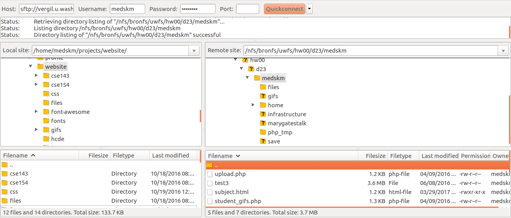
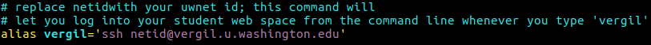

<Hello!></Farewell...>With that, it's perhaps most important to get at least 7 hours of sleep the night before to be able to have a sharp mind when the time comes to solve new problems with familiar topics.
Looking back:
How to follow a code quality guide and discuss design decision trade-offs
How to learn different types of programming languages and technologies all at once (this is a super important skill)
How to use Git version control (very important for programming projects!)
How to learn a public API with various endpoints and response types
How to write and document public APIs with PHP
Basic motivation of accessibility, usability, and security on the web
You can add all of this to your resume! (conservatively)
You've done all of this work to make some pretty neat web sites and programs... but now what?
Every student has their own website managed by UW's Shared Web Hosting platform.
You can add to your webspace anything written the languages we've learned this quarter, including projects in HTML/CSS, JS, PHP, SQL, etc.
Here's mine! (outdated)
You can stand out among a sea of applicants for jobs with an online resume/portfolio
You can show off your web programming work to friends, family, and even future employers! Also it's free while you're a UW student :)
You can have a public repository of class/side projects you've done throughout college
Landing page (content that I couldn't otherwise fit on a resume)
Online Resume (demonstates web development skills and provides employers with links to relevant projects)
Teaching materials
Various side projects/course projects/APIs I want to share with others and/or need a server for
Visit https://itconnect.uw.edu/connect/web-publishing/shared-hosting/activating-shared-web-hosting/ for a comprehensive guide to manage your student website on the Shared Web Hosting platform
Subscribe to "Dante/Vergil Account" and "Student Web Publishing"
You'll need either an SFTP client (FileZilla, CyberDuck, etc.) or you can use ssh on a terminal to log into your student webspace with your uwnetid and password. Most students find an SFTP client easiest to use.
As of writing these slides, UW students will need to use vergil as the server name for logging into your website.
FileZilla is a free program for Mac, Windows, and Linux which will allow you to easily upload and transfer local files to the internet.
First, install FileZilla (choose the Download FileZilla Client option, not the server option).
Once installed, start the application. You should see something like this when it loads:
Use the information provided on the Generic Connect Settings page to connect to your student webspace (vergil) in FileZilla:
Once you have connected successfully, you will see a directory structure on the right column of FileZilla:

The left (with a "Local site" dropdown) shows all of your files on your local computer, and the right (with a "Remote site" dropdown) shows all of your files on your student webspace.
To publish files to your public student url, simply drag and drop folders/files from local to remote.
Make sure any files you want to be accessible by the public are put in the public_html folder - if you are also an employee of UW (e.g. a TA) you can activate both Student Web Publishing and the employee Web Publishing services, but you'll then use student_html for your student webspace and public_html for your employee one (more information on the differences between these two folders here).
Check that your files are now accessible by going to:
https://students.washington.edu/netid
replacing "netid" with your UW student netid. For example, my website is accessible at
https://students.washington.edu/medskm
Note that for any server-side code (e.g. PHP) you don't need to do anything to run it! It works as soon as you upload it to the shared web hosting space.
Secure Shell (SSH) allows a user to connect to a server remotely and open up a command-line terminal to run commands, scripts, or edit files. If you know how to use a terminal, this tends to be faster than SFTP (and is overall a good tool to know).
If on Windows without Bash (Windows 10): You'll need to install a terminal that allows you to ssh (e.g. PuTTY). Then follow the same instructions as below.
In a terminal window, run the following command to connect to a server via SSH, replacing "netid" with your UW netid:
ssh netid@vergil.u.washington.eduExample of logging into SSH (use CTRL+D to quit session):
Use ls to list your files in the current directory (note you no longer
are in the local directory when in an ssh session) and cd to change
directory (anything you edit in the public_html folder will be seen immediately
on your public student website)
Tip: I have a bash alias for ssh-ing into different servers. To do this on your own computer, add the following line as an alias:

You can then just type vergil in the terminal to ssh quickly. Here is a
starting .bashrc file if you don't have one,
with the alias command included on line 135 (among a few other aliases you may find
helpful). You can create/edit your .bashrc which should be located at ~/.bashrc.
SSH lets you log into the student server and navigate/edit files from the terminal. However, you cannot access your local files while in an ssh session.
To transfer files from your local computer to the server, use the scp (secure copy) command on the command line:
scp sourcefile netid@vergil.u.washington.edu:destinationCommand Line (local)
The first argument is the path of the file you want to transfer relative to what current directory you are in - destination is the location on the server that you want to transfer the sourcefile to (use . for destination to transfer to the home directory, which is where you go each time you ssh into the server).
To transfer an entire folder to the server, add -r after scp and replace sourcefile with the folder name.
If you know the path of a file/folder in your student website and want to transfer it to your local computer, just swap the argument order:
scp netid@vergil.u.washington.edu:sourcepath .Command Line (local)
In this case, since your local directory system, the last . results in
copying the file(s) located at sourcepath (on vergil) to the current directory.
The following is an example of sending foo.html
(in my current directory) to my student webspace (ran locally):
The following is an example of sending creative-project
(a folder of files in my current directory) to my student webspace (ran locally):
The following is an example of sending bar.html
(a file in my student public_html directory) to my current local directory (ran locally):
Q: What are some ideas to continue web programming/CS beyond this course?
A:
CSE 160/INFO 180 (Python/Data Science)
CSE 344/ CSE 414/ INFO 330(Majors/Non-majors Databases)
CSE 484 (Computer Security with module on web security)
INFO 200 (focus on web design/prototyping/UX)
INFO 201 (non-majors, R and data visualization)
INFO 340 (deeper into client-side development and frameworks like SASS, Bootstrap, jQuery, and React)
HCDE 210 (Explorations in HCDE; methods and applications of human-centered design)
Research in any of these (and related) departments!
Q: What are some ideas to use my creative project/portfolio work after finals?
Over the quarter, you've had 5 CP's exploring the "full stack" of web technologies - consider writing a brief reflection for each, discussing what you learned, your design process (and how that changed as you gained more experience), and what you would like to do if you were to continue a project.
You can add to your student webspace anything written the languages we've learned this quarter, including projects in HTML/CSS, JS, PHP, SQL, etc.
You can stand out among a sea of applicants for jobs with an online resume/portfolio
You can show off your web programming work to friends, family, and even future employers! Also it's free while you're a UW student :)
You can have a public repository of class/side projects you've done throughout college
You all have enough experience in the different languages we've covered to add these to your resume
You all have enough experience to apply for web programming internships or project "contracts"
As a web developer, you now have a lot of tools in your toolset to support your resume
What area do you feel more comfortable with? Do you see yourself working ~8 hours a day writing/debugging front-end code? Back-end code? Both?
Remember to list your skills such that you'd be confident talking about them to a potential employer during an interview
Some particularly helpful skills/experience to have today include:
It depends. Think about the purpose of your website - do you want a simple landing page? An online resume? A portfolio of different projects you've worked on? A blog?
A good "general-purpose" website can include:
Q: I’d love to get some sort of job/internship in web development. How do I use my skills that I’ve learned here to get employed?
Q: What can I put on an online resume after this course, and what should I focus on learning more about?
You all have enough experience in the different languages we've covered to add these to your resume and apply for internships, side projects, etc.
As a web developer, you now have a lot of tools in your toolset to support your resume, but expect to learn more
Look at other resumes and portfolios for web developers. How do they showcase their projects? What were their first internship/job/research experiences? How do they talk about their hard/soft skills?
Web development is probably one of the most useful things to apply to a variety of projects. You can look for internships, as well as research groups on campus looking for website development.
Networking is one of the most useful things to invest in. Check out some really cool meetups in Seattle - for most of these, you don't need to be an expert, and can get connected to people who know about local opportunities.
What area do you feel more comfortable with? Do you see yourself working ~8 hours a day writing/debugging front-end code? Back-end code? Both?
Remember to list your skills such that you'd be confident talking about them to a potential employer during an interview
You already have some cool work you can publish with your Creative Projects!
If you wrote a personal web page for one of your creative projects, you can iterate on that
If you enjoy the process of designing and customizing your own website, you can expand on what you've learned in this class and explore new HTML5, CSS3, and JavaScript features you could add to your website
If you're not as confident about web design, you can start with open-source HTML/CSS templates/components like Bootstrap (make sure to change it enough to make it your own style).
Write a Chrome extension!
Explore more public APIs and use one in a creative way (or use multiple together) similar to CP3.
Write a web page or application for a holiday gift for family/friends
More ideas in slides below...
If you like/are studying...
... Pokemon
... Biology
... Chemistry
... Linguistics
... Data
... Art
If you like/are studying...
... Teaching/TAing
... Math
... Video Games
If you like/are studying...
... Sports
... Cooking
Follow blogs, social media, tech news, etc. specific to web development
Podcasts are also great!
If you are interested in research, there's a ton in security and accessibilty on the web - check out USENIX!
Be patient, and take it a day at a time. Focus on one thing and learn it well, and focus on the foundations.
Look for events/talks in Seattle related to your intersts in web programming
Don't try to learn it all :)
Being able to learn new libraries/frameworks quickly is key and comes with practice :) It will not be worth your
Follow a couple of blogs/feeds and stay up to day with 1-2 articles a week, just so that you have a sense of where things are and what recent things have happened
HackerNews is a good source of programming-related news and tools... and I wrote a Chrome Extension for that :)
Adding a password to your website
"Essential Components of a Great Personal Website" - geared towards college students
10 Tips for the Perfect Portfolio Website - some good tips and resources
Cool interactive resume developed with JavaScript and CSS
Another interactive resume
You've all learned a ton of new languages and technologies
From here on, you'll be able to "speak the language of web development" among friends, co-workers, employers, professors, etc.
Chances are, you'll know material they don't
Don't be overwhelmed about the world of the web today - there's a lot, but patience, practice, and focusing on a particular domain will be most helpful to improve as a web developer
Thank you for a fantastic quarter! We've really enjoyed working with you all.
Have a great Summer Break, and feel free to keep in touch!